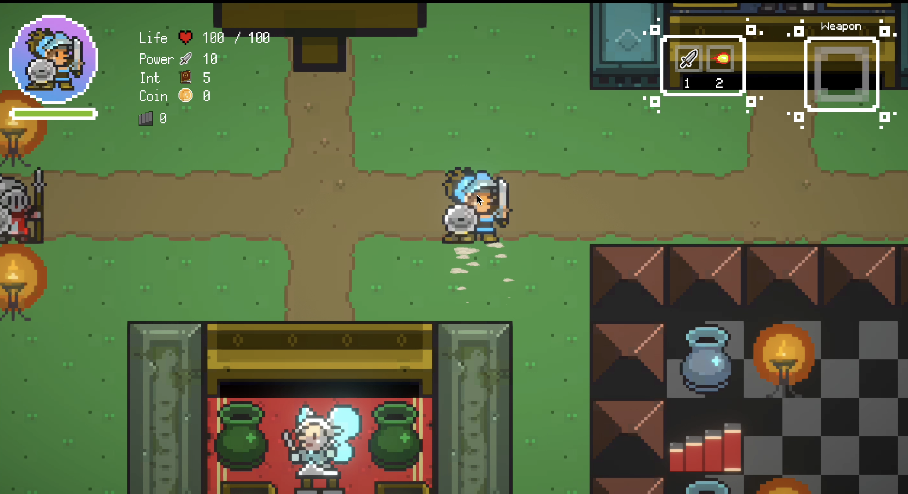
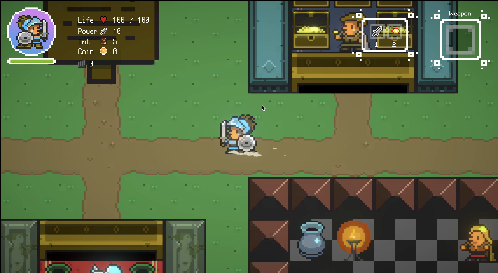
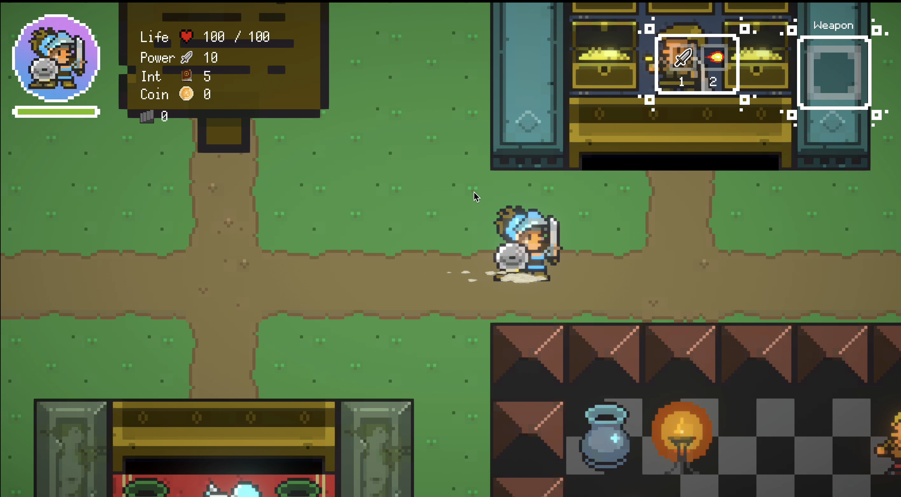
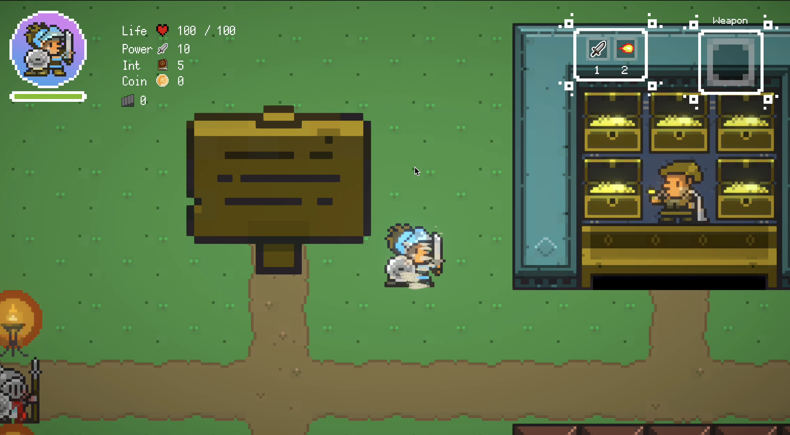
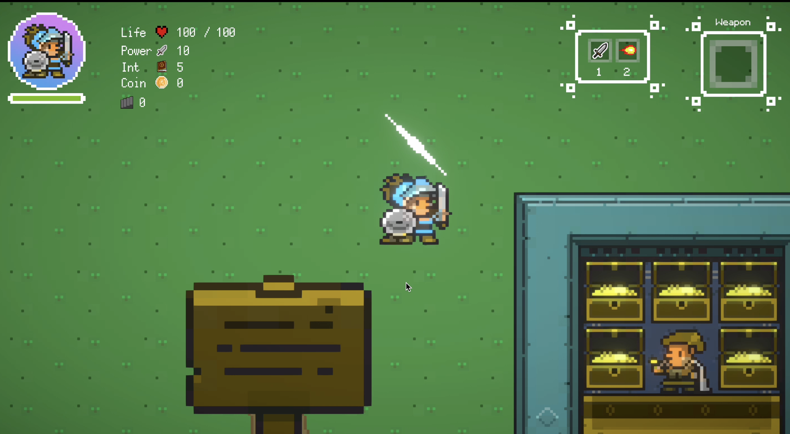
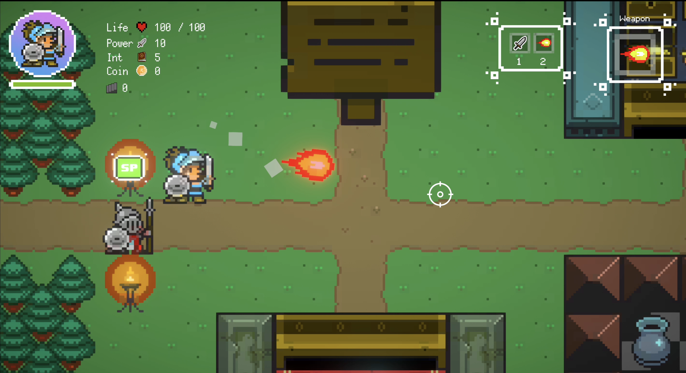
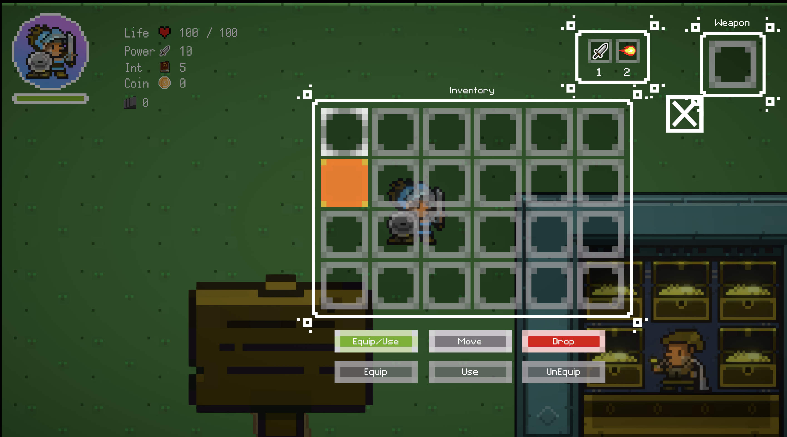
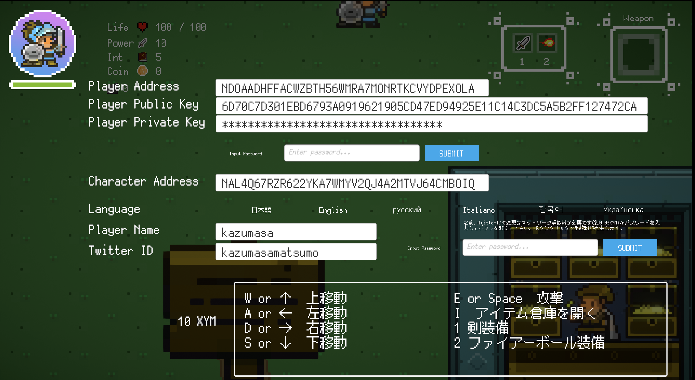
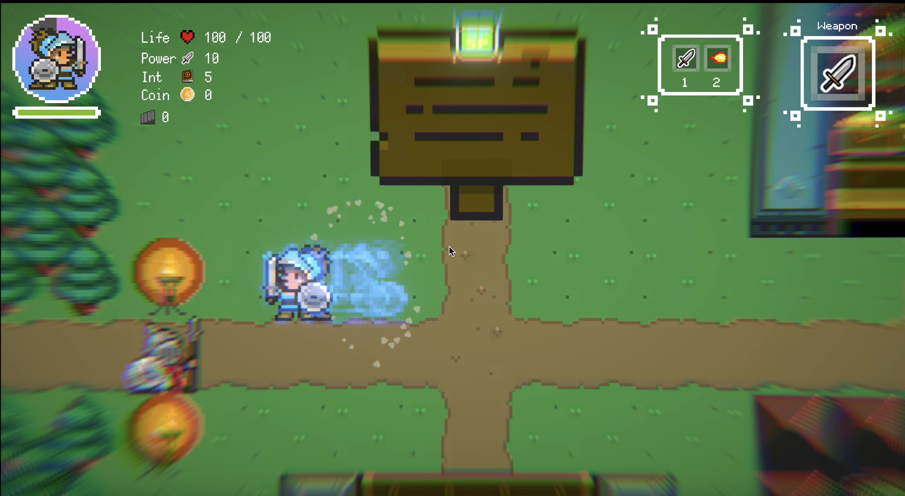
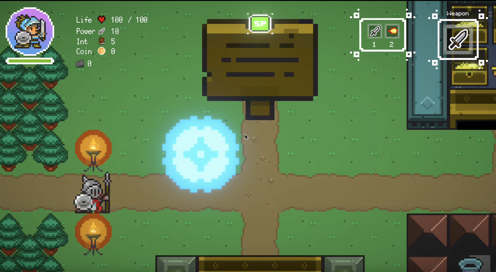

キーボードとアクションの関係性
ここではキーボードとアクションについて解説します。
| 対象キー | 動作 |
|---|---|
| W or ↑ | 上移動 |
| A or ← | 左移動 |
| D or → | 右移動 |
| S or ↓ | 下移動 |
| E or Space | 攻撃 |
| I | アイテム倉庫を開く |
| 1 | 剣装備 |
| 2 | ファイアーボール装備 |
| esc | 設定画面 |
| F | ダッシュ |
| R | パリィ |
移動
| 対象キー | 動作 |
|---|---|
| W or ↑ | 上移動 |
| A or ← | 左移動 |
| D or → | 右移動 |
| S or ↓ | 下移動 |
上移動 
左移動 
右移動 
下移動 
攻撃
| 対象キー | 動作 |
|---|---|
| E or Space | 攻撃 |
剣を装備した時 
ファイアボールを装備した時 
アイテム倉庫を開く
| 対象キー | 動作 |
|---|---|
| I | アイテム倉庫を開く |

装備切り替え
| 対象キー | 動作 |
|---|---|
| 1 | 剣装備 |
| 2 | ファイアーボール装備 |
剣を装備する（左上のアイコンをチェック）

ファイアーボールを装備する（左上のアイコンをチェック）

メニュー
| 対象キー | 動作 |
|---|---|
| esc | 設定画面 |

特殊アクション
| 対象キー | 動作 |
|---|---|
| F | ダッシュ |
| R | パリィ |
ダッシュ 
パリィ 